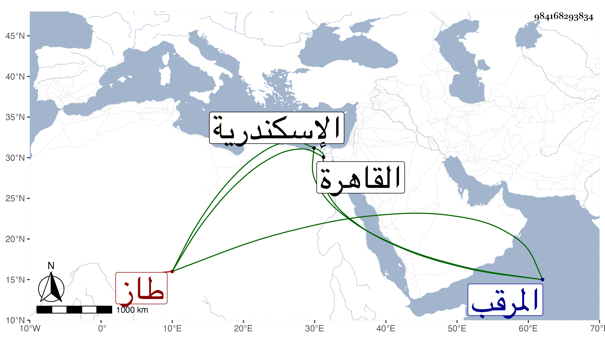

0902Sakhawi.DawLamic.ITO20230111-ara1.EIS1600.984168293834
Biography ID: 984168293834
1065
سودون طاز من مماليك الظاهر برقوق وخواصه . أمره عشرة وجعله معلما للرمح لكونه كان رأسا فيه وفي غيره من أنواع الفروسية يضرب بقوة طعنه وشدة مقاتلته المثل وأما سرعة حركته وحين تسريحه بجواده فإليه المنتهى ، وبعد موت أستاذه قدمه ابنه الناصر ثم عمله أميراخور كبير فزادت عظمته وصار إليه المرجع في غالب أمور الرعية وعمل راتب سماطه في اليوم ألف رطل من الضأن خارجا عن الدجاج والأوز والرمسان من الضأن لمزيد كرمه وكثرة إنعامه على الماليك السلطانية وغيرهم بحيث قيل إن رفده عم جميعهم ولم يزل على جلالته إلى أن صفا له الوقت بحيث لو رام التسلطن لمشى له ذلك بدون منازع ثم نزل من الأسطبل السلطاني لداره وعزل نفسه عن الآخورية لما بلغه من كلام يشبك في حقه عند السلطان ثم خرج بمماليكه وحواشيه من المماليك السلطانية وهم زيادة على ألف لجهة سرياقوس رجاء أن يأتيه غير من معه من المماليك فلم يأته أحد وترددت الرسل بينه وبين يشبك والناصر وهو يترجى أن أمره سيقوى ويظفر بيشبك فلم يلبث أن عزله الناصر من الآخورية وراسله بالعود إلى القاهرة على أقطاعه بغير وظيفة أو غير ذلك من البلاد الشامية فلم يجب إلا بعد إخراج أقباي الكركي فما أذعن الناصر لذلك وقرر الارسال إليه مرة بعد أخرى إلى أن تحقق الناصر منه عدم الموافقة فركب حينئذ بالعساكر ونزل إليه فلم يثبت من معه من المماليك السلطانية وآل أمره إلى أن ترامى على يشبك فقبله وبالغ في إكرامه وكلم الناصر فرسم بتوجهه لدمياط بطالا ورتب له ما يكفيه وأعطاه يشبك ألف دينار واستمر بها إلى أن ركب إلى الشرفية وخرج له جماعة من المماليك السلطانية فجهز له السلطان من قبض عليه ثم حبس باسكندرية بقلعة المرقب إلى أن قتل في ذي الحجة سنة ست . وأرخه شيخنا في سنة خمس وهو سهو ، وترجمته طويلة وكثير من أخباره في حوادث تاريخ شيخنا ، وذكره المقريزي في عقوده رحمه الله .
